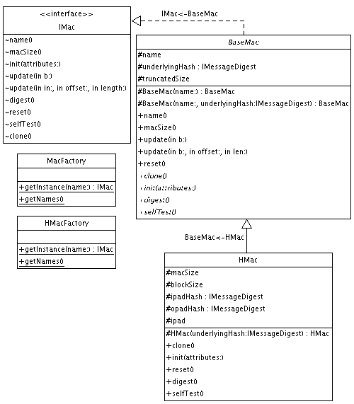

|
For the latest news and information visit The GNU Crypto project |
||||||||||
| PREV PACKAGE NEXT PACKAGE | FRAMES NO FRAMES | ||||||||||
See:
Description
| Interface Summary | |
| IMac | The basic visible methods of any MAC (Message Authentication Code) algorithm. |
| Class Summary | |
| BaseMac | A base abstract class to facilitate MAC (Message Authentication Code) implementations. |
| HMac | The implementation of the HMAC (Keyed-Hash Message Authentication Code). |
| HMacFactory | A Factory to instantiate Keyed-Hash Message Authentication Code (HMAC) algorithm instances. |
| MacFactory | A Factory that instantiates instances of every supported Message Authentication Code algorithms, including all HMAC algorithms. |
| MacInputStream | A filtering input stream that computes a MAC (message authentication code) over all data read from the stream. |
| MacOutputStream | A filtering output stream that computes a MAC (message authentication code) over all data written to the stream. |
| TMMH16 | TMMH is a universal hash function suitable for message authentication in the Wegman-Carter paradigm, as in the Stream Cipher Security Transform. |
| UHash32 | UHASH is a keyed hash function, which takes as input a string of arbitrary length, and produces as output a string of fixed length (such as 8 bytes). |
| UMac32 | The implementation of the UMAC (Universal Message Authentication Code). |
Provides a basic API for using Message Authentication Code (MAC) algorithms.
A Message Authentication Code, or MAC, is akin to a keyed hash function, in that it produces a fixed-length identifier for variable-length data along with a key. The purpose of a MAC is to guarantee the integrity and authenticity of data, as it is computationally infeasible to fake a MAC without knowledge of the key.
The following diagram shows the important classes participating in this package:

Here is a simple example of how to use the HMAC algorithm, with a SHA-1 hash.
IMac mac = MacFactory.getInstance("HMAC-SHA-160");
HashMap attributes = new HashMap();
attributes.put(IMac.MAC_KEY_MATERIAL, key_bytes);
attributes.put(IMac.TRUNCATED_SIZE, new Integer(12));
mac.init(attributes);
mac.update(input, 0, input.length);
byte[] result = mac.digest();
|
For the latest news and information visit The GNU Crypto project |
||||||||||
| PREV PACKAGE NEXT PACKAGE | FRAMES NO FRAMES | ||||||||||